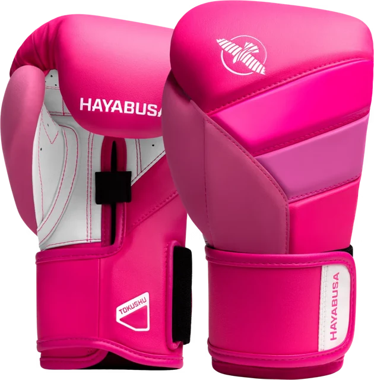
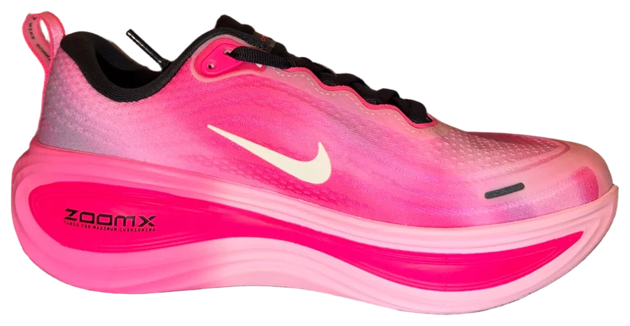

Selected works
From data to decisions.
Each chart below uses figures published in the case study it links to.
Toolbox
- SQL
- Python
- Excel
- Tableau
- SQLite
- Financial Analysis
Profile
My story
Data analyst with an investigator’s eye. I turn messy operational and financial data into clear decisions through Excel, SQL, Python, and visualization.
I’m especially interested in financial modeling, reporting, reconciliation, and identifying the why behind a number — not just the number itself. I value accuracy, practical tools, and analysis people can actually use.
- B.S. in Data AnalyticsWestern Governors University · December 2026
- Coursework in Computational Mathematical SciencesArizona State University
- Data Analyst NanodegreeUdacity
Off the clock
Life outside the spreadsheet.

Boxing
Rounds with my godfather, in the cutest pink gloves.

Running
Logging miles in brand-new (very pink) running shoes.
Currently learning
Piano
Reteaching myself, powered by sixth-grade muscle memory. Small sample size, very high variance.